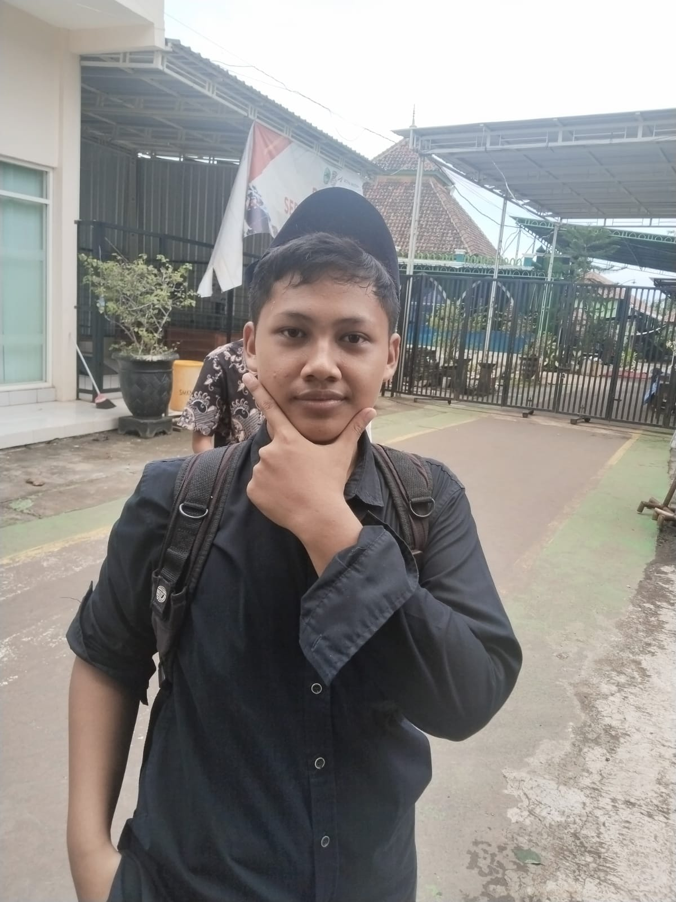
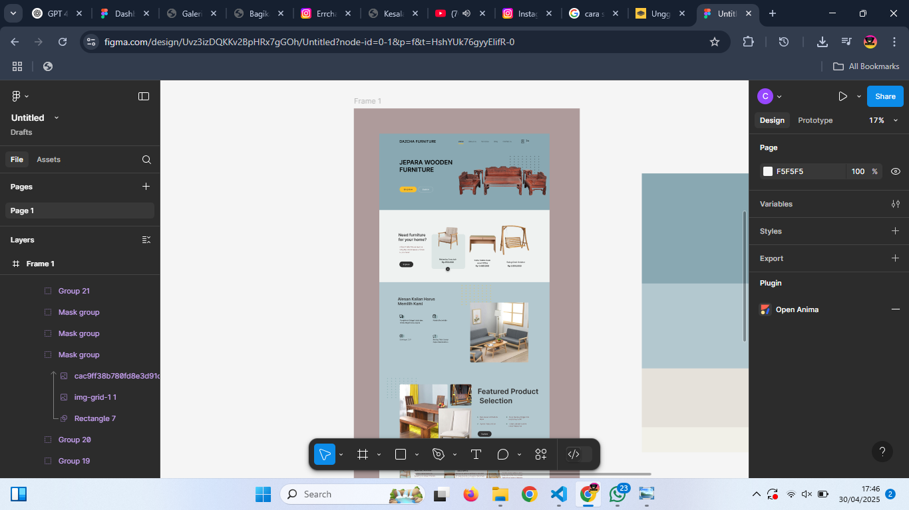
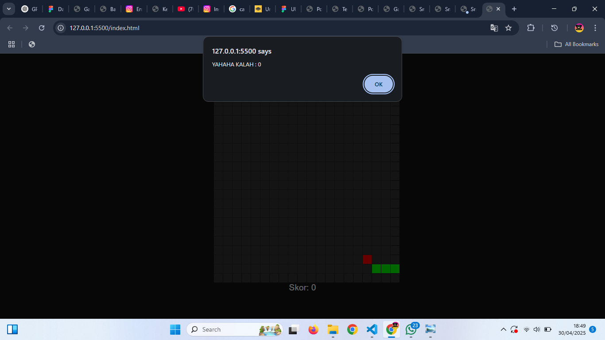
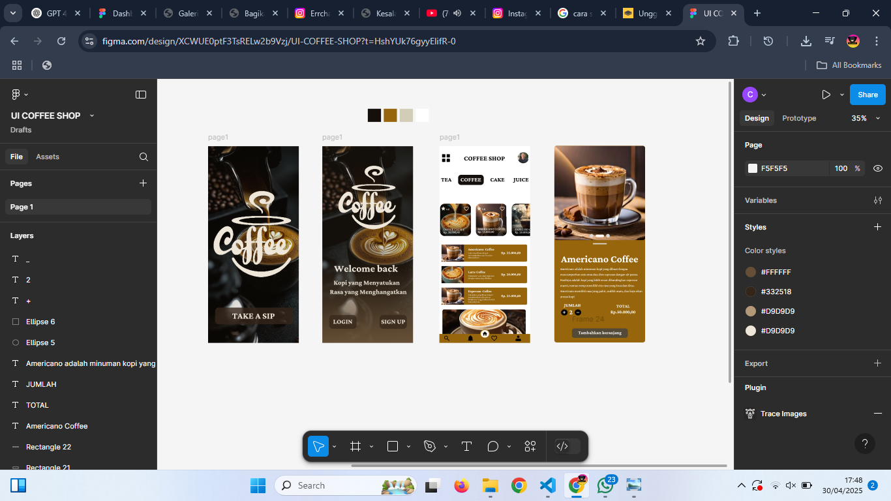
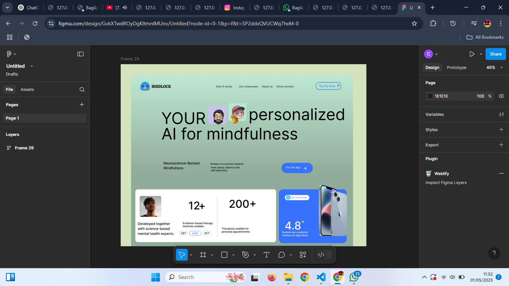

Mari lebih mengenal diriku
Mari lebih dekat mengenal saya.
Perkenalkan Nama Saya Adalah Ircham Nur Fajri Kamal, Saya Adalah Siswa Yang Bersekolah Di SMKN 1 Bangsri. Saya Masuk Jurusan PPLG Karena Saya Memiliki Minat Untuk Belajar Coding dan Desain. Dengan adanya PKL Saya Akan Berusaha Menambah Wawasan Saya Tentang Desain Dan coding, Dan Akan Manfaatkan Waktu PKL Untuk Mengasah Skill Saya. Selain Itu Saya Juga Suka Dalam Hal Fotografi. Itu Saja yang Dapat Saya sampaikan, Apabila Ada yang Butuh Di pertanyakan Bisa Datang Ke Sosial Media Saya Atau Hubungi NO Diatas.

2023 - Sekarang
PPLG
2019 - 2022
2012 - 2018

Desain website meubel

Game Snake

UI Coffee Shop

Landing Page
Saya ingin mengembangkan skill teknis dan pengalaman industri nyata di bidang perangkat lunak dan desain UI/UX.